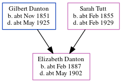

Elizabeth Jane Danton cFeb 1887 - c1902
[ Home ] | [ Calendar ] | [ Surnames Index ] | [ Census Index ] | [ Family History ]The child of Gilbert Danton (a gas stoker) and Sarah Tutt, Elizabeth Danton, the first cousin twice-removed on the father's side of Nigel Horne, was born in Halsham, London, England c. Feb 18871,2,3,4.
During her life, she was living at Ledbury Street, Peckham, London, England in 18911 and on Apr 5, 18916; and in West Ham, Essex, England in 19012.
She died c. May 1902 in Romford, Essex, England5.
Parents
- Gilbert Johnson was born c. Nov 1851
- Sarah Maria was born c. Feb 1855
Citations
- 1891 England Census Online publication - Provo, UT, USA: The Generations Network, Inc., 2005.Original data - Census Returns of England and Wales, 1891. Kew, Surrey, England: The National Archives of the UK (TNA): Public Record Office (PRO), 1891. Data imaged from The National (Relation to Head of House: Daughter)
- 1901 England Census Online publication - Provo, UT, USA: The Generations Network, Inc., 2005.Original data - Census Returns of England and Wales, 1901. Kew, Surrey, England: The National Archives of the UK (TNA): Public Record Office (PRO), 1901. Data imaged from the National (Relation to Head of House: Servant)
- England & Wales births 1837-2006 - Findmypast
- England & Wales, FreeBMD Birth Index, 1837-1915 Online publication - Provo, UT, USA: The Generations Network, Inc., 2006.Original data - General Register Office. England and Wales Civil Registration Indexes. London, England: General Register Office. © Crown copyright. Published by permission of the Cont
- England & Wales deaths 1837-2007 - Findmypast
- 1891 England, Wales & Scotland Census - Findmypast (was age 4 and the daughter of the head of the household)
Media
England & Wales births 1837-2006 - BMD/B/1887/1/AZ/000140/030
England & Wales deaths 1837-2007 - BMD/D/1902/2/AZ/000087/006
Family Tree
Generated by ged2site. Last updated on Jun 11, 2024